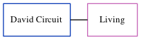

David W Circuit
[ Home ] | [ Calendar ] | [ Surnames Index ] | [ Census Index ] | [ Family History ]David Circuit, the husband of Joyce M Driscoll (the third cousin once-removed on the father's side of Nigel Horne), and married Joyce in Thanet, Kent, England around Nov 19571.
Citations
- England & Wales Marriages 1837-2005 - Findmypast
Media
England & Wales marriages 1837-2005 - BMD/M/1957/4/AZ/000185/031
Family Tree
Generated by ged2site. Last updated on Jun 11, 2024